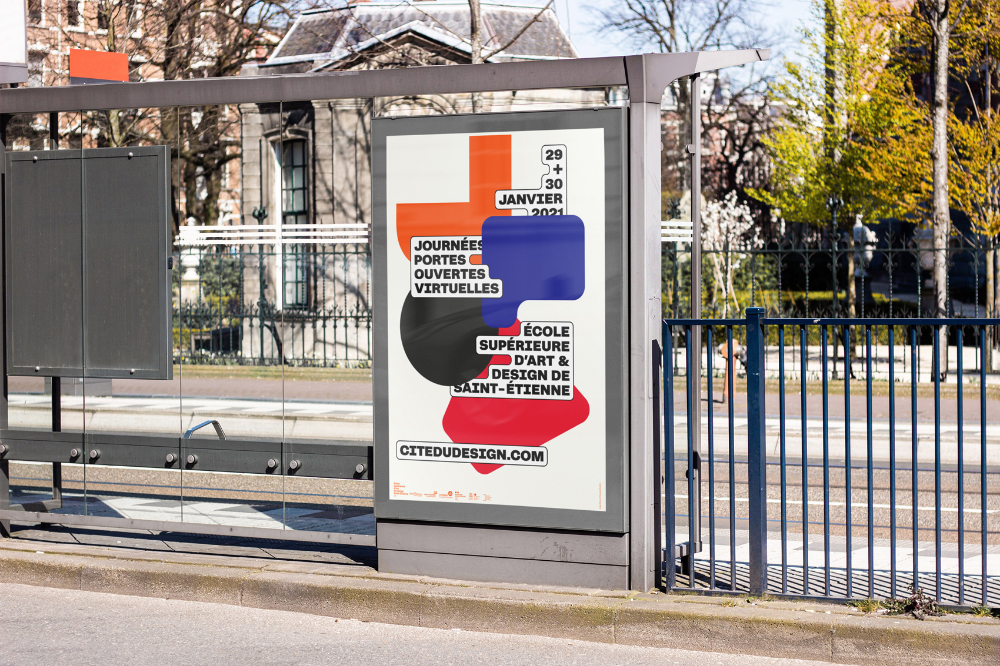
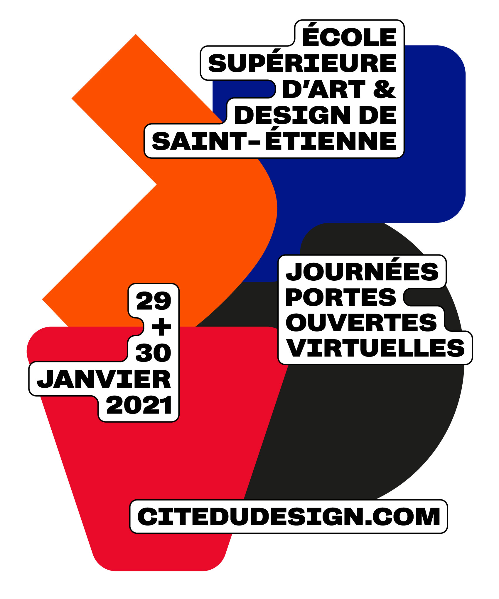
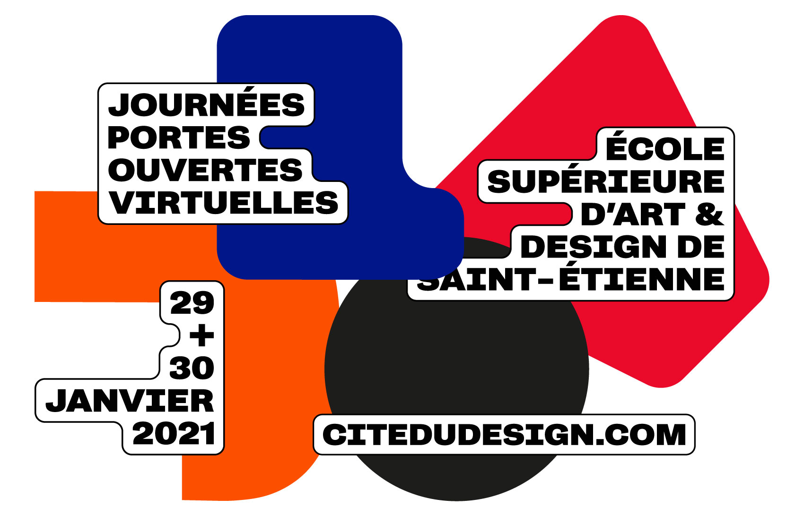
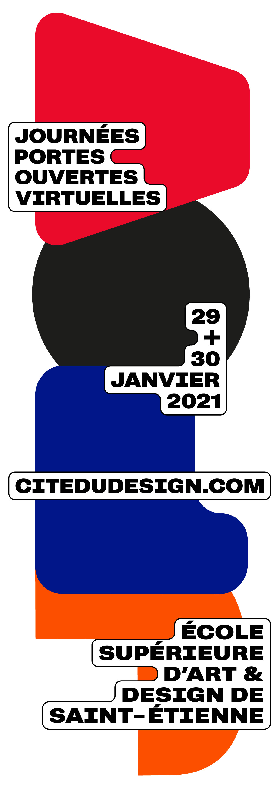

JPOV
2021
En collaboration avec → Thomas Dutoit
Identité visuelle des Journées Portes Ouvertes [ Virtuelles ] de l'École Supérieure d'Art et Design de Saint-Étienne. Après avoir retravaillé les 4 lettres J, P, O et V en formes, nous en avons produit de courtes animations, aux différents formats des panneaux publicitaires animés de la ville de Saint-Étienne, où les formes se voient attribuer un rôle et commence à jouer ensemble, créant de petites narrations.



